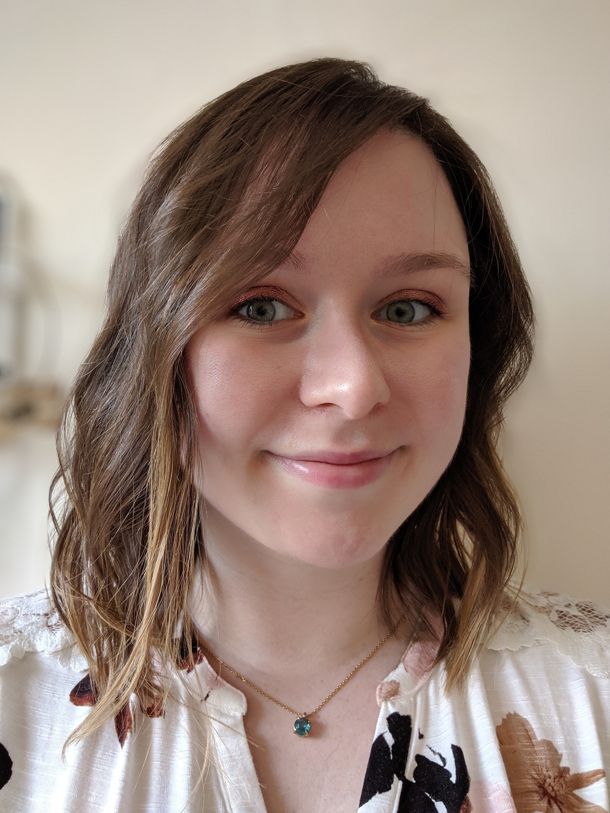

Louise MacDonald
Software Developer | Boston, MA
Software Developer | Boston, MA

I am currently in the Software Engineering Immersion program at Thinkful. When I was a teenager, I created simple websites about my interests and for school projects. I decided that I wanted to pursue this interest further and turn it into a career.
My interests include:
I am also an avid reader and always have a book on the go. My other interests include film, art, and photography.
Feel free to contact me at: